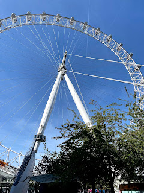
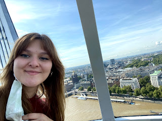
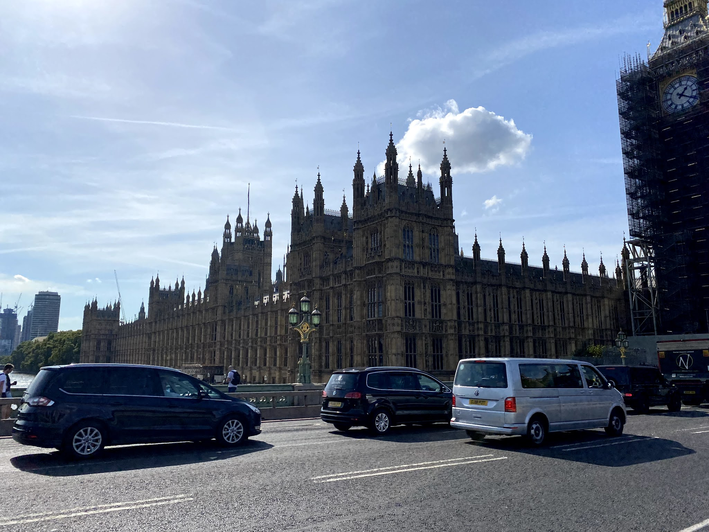
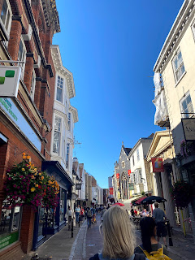
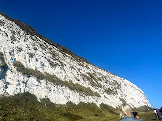
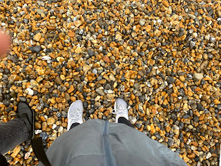
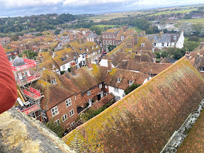
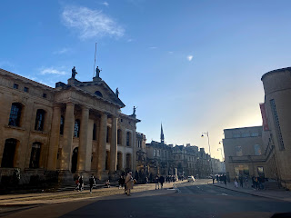
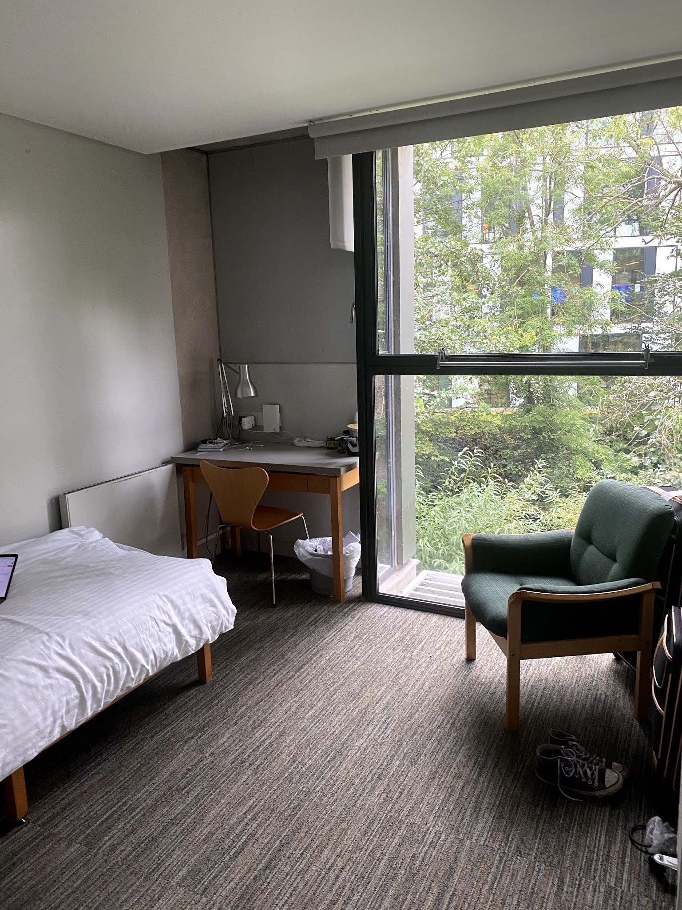

First off: sorry. Again. I know it's been a long time since I updated (once a week my ass, right?), but I simply have So Much going on that every day I struggle to find time to write on top of the piles of papers I'm thinking about having to write.
Second off: I'm in Oxford, babey!!!! I arrived Sunday morning and it has been amazing thus far! I can't wait to tell you all about it. But, first, I have to finish what I started: London.
I'll try to be as quick as I possibly can be about all that went down in London, because I know that I'm really here for Oxford, but I had such a great time and saw so many things that I just can't skip over.
The day after my last blog, my friends and I did a little self-guided tour of London, seeing everything we were interested in. This started on the London Eye, which I thought was great... except for the fact that my ticket cost £31. To see the same skyline in a bunch of different angles. It was gorgeous, but worth £31??? Debatable. Still amazing, though, and I'll include pictures of my ride below. We also walked around St. James Park, which had a lot of cute huts, creeks, animals, the like. Then we stopped by Buckingham Palace, but (unpopular opinion) it's not as pretty as Parliament! It doesn't look like a castle at all! The abundance of gold detailing was gorgeous, and the gates are cool, but I was expecting a whole castle. Oh, well. Also, the experience was overshadowed by me running into someone who looked suspiciously similar to William Jackson Harper, who plays Chidi in The Good Place, one of my favorite shows. I'm, like, 99% sure it was him. I felt a little bad because the second I saw him, we made eye contact and I whispered to my friend who he was, and he IMMEDIATELY put on his mask, but he sat by the fountain next to Buckingham Palace for a long while, so he obviously didn't feel like we were going to mob him.
A couple of days later, I ran into Camden Market to see what was going on there, as it's a hub for music, alt clothing, food, etc. It's just a really cool area (they had pride-themed crosswalks!), and I grabbed some food and walked around. The whole of Camden town is really punk, which made it a fun place to hang out on weekends (being that Kentish Town, where I stayed, was literally right next to Camden).
The next day, my program took a trip to see Canterbury and Dover, which are about 2 hours by bus from London. We stopped in Canterbury first, and got to walk through the Cathedral. It was beautiful, with so many intricate details embedded everywhere throughout, from the statues to the stained glass windows to the architecture itself. After we got out of the Cathedral, we had a little time to grab lunch, but not much time after that to explore. I wanted to get a good look at the town, as my mom studied there when she was in college, but I never really got to, which was upsetting. We got on the bus to visit Dover castle, which was really cool, but much too hilly for me, little miss Illinois. I always scoffed whenever someone would say that Illinois didn't have hills, but after climbing several hills thinking I was going to pass out at any second, I suddenly understand exactly what people mean. I'll admit, I was a bit grumpy on this trip and didn't get to really appreciate the beauty that is Dover, mainly because I was bitter about the limited time in Canterbury and the pain (and, frankly, embarrassment) over how difficult hiking through Dover was. We saw Dover Castle, including the inside of it, which was really cool and set up exactly how it would've been had people been living in it. We went to the top of it and had some really nice views. Then we climbed all the way back down to the tunnels of Dover, which were used in the battle of Dunkirk in WWII. It was interesting, but much of the tunnels were closed due to COVID and I was already in a foul mood. HOWEVER. The White Cliffs. Oh my god, the White Cliffs. We went there directly after the castle/tunnels and I was mesmerized. They were gorgeous. Truly the most beautiful thing I've ever seen. I can't even describe the beauty, and the pictures that I have don't do it justice. Looking out over the coast, you can see France about 20 miles away. I definitely recommend going if you're ever visiting the UK.
The next week was pretty anticlimactic. I visited TATE Britain for my film class, which is a really cool art museum that houses British art from all different time periods. We walked around for an hour and then ended in the museum cafe with a discussion about what art is, exactly, and who defines art, and what are the different hierarchies of art? What is the difference between different kinds of representation in art?
I finished up my pre-Oxford class with two essays, one about the film Fish Tank directed by Andrea Arnold, with my essay focusing on the way in which girlhood and a predatory relationships are represented on film, and the difference between having a male director and a female one, and whether the absence of the male gaze in film alters the depiction of such topics in cinema. The other essay was about Steve McQueen's first feature-film Hunger, also starring Michael Fassbender. It covers the Irish Republican Army and their time in prison, with Michael Fassbender playing Bobby Sands, a leader within the prisons who died doing a hunger strike to be recognized by Thatcher as a POW. It's very intense. Very artistic. It's a wonderful film. I hated every second of it.
On Friday, we took a trip to Hastings and Rye. Hastings is a big fishing town, and is seaside. It's really cute, but it was raining the entire time we were there, making our outdoor tour unbearable. We wandered around a little, found out a little bit of its history, but didn't take away too much (sorry, Hastings!). We then drove to Rye, and by that point, the rain had let up. On the way, though, we stopped by Winchelsea Beach, but it was too cold and wet for us to have a lot of time there. We took some pictures, stole some rocks, and were on our way. Upon arriving in Rye, we walked straight to a church (the churches here, my goodness) and climbed to the top (and also the climbing to the tops of churches, my goodness) to get a really cool view of the town. After that, we got Cream Tea, an English classic. It's basically just black tea with milk, and then a scone (but "scone" here means more of a biscuit. Think if Red Lobster's biscuits didn't have any seasoning or cheese) with butter and jam. I will say, I am not a tea drinker back home, I simply don't like the taste, but here? It's so good! It's not even the taste, it's just... there's something so lovely about an afternoon tea with a scone. I can't describe it. Worst of all, I know that I won't be able to stand tea and scones when I get back home. There's just something about the atmosphere. Anyway, we walked around Rye for a bit, and it's just the cutest town ever. There's a famous road called Mermaid road, named after its "Mermaid Inn," the oldest inn in town, dating back hundreds of years. Then we went back to our accommodation and went to a pub nearby to chat over some drinks.
Saturday was spent finishing an essay, and then my friends and I decided to get Hot Pot, which is a Chinese cooking method that includes dipping raw meat into boiling-hot tubs of soup (kind of like fondue, but not really). It's a communal thing, and usually takes a few hours. It was really fun, and a wonderful way to end our stay in London.
Alright, now to Oxford! I know I said I was going to be quick with the London, but I lied. Sorry.
Upon arrival to the college, we received our keys and room numbers. There's good news and bad news with this. Bad news: all of my friends (and the majority of the visiting students) are all in what's called the "old quad" and are really close together. They're also with all the first years who are not visiting students. I, for whatever reason, did not get placed with my friends and the rest of the visiting students. I'm in a completely different area of campus (not too far though!). The good news, which I believe outweighs the bad tenfold: I have an ensuite bathroom. And the rest of them don't. Ha ha. I can shower whenever I want and not worry about people walking in on me in the bathroom. I can take however long I want to doing my skincare routine. A true blessing. I'm so happy.
All that aside, I'll include some pictures of my accommodation. It's pretty basic, but it's a decently large single bedroom, which is really nice. And not to mention my glorious bathroom again, but.... my glorious bathroom. I also have a really nice view from my window, overlooking a creek and the science building. Amazing.
After settling in, I went on a tour of campus, which was helpful. Oxford is a conglomeration of almost 40 colleges, and I go to St. Catherine's College, which is the biggest and the newest. So my college is not castles and glorious old buildings, but rather modern, city-like buildings. Still pretty (it's prettier in person), but not what people expect when they think of Oxford. The downside to living here is that dining is weird. I have a small kitchenette on my floor, but it's just a stove, a sink, a microwave, and a fridge with no freezer. Also, the nearest grocery store is almost a 20 minute walk from campus, which makes cooking for myself really inaccessible. If I want to eat in the dining hall, however, I have to book my meal 24 hours in advance, and slots fill up quickly, so not everyone can eat every day in the dining hall. This is worrying to me, as I'm someone who often forgets to feed themselves, and I'll need accessible meals if I'm going to properly sustain myself, especially with the intense amount of work I'm going to be doing as a student at a rigorous university. But hopefully I'll get into a groove and routine, and everything will work out.
The city of Oxford is gorgeous! Even though my college isn't castles and brilliant architecture, the colleges that I pass on my way into town are, so I still get to taste that academia aesthetic. The town itself has lots of cute stores (lots of Oxford merch), as well as a farmer's market/food market that I went to yesterday, where I got one of the best pulled pork sandwiches I've ever had. Many people bike here, and traffic is weirdly pedestrian-friendly. Jaywalking isn't really dangerous here, as most cars and bikes don't go down smaller roads.
I've made really good friends with a lot of the other visiting students, and again, it feels like I've known some of these people for years, when it's just been a few weeks or days. Everyone here is so friendly and welcoming, I don't feel that "oh god everyone here hates me" vibe that I've had in the past. There's been pub nights almost every night, and I've gone to a couple of them. We went to a place called the Turf Tavern, which is really really old, and has had a ton of famous people visit. It's the place where Bill Clinton "did not inhale" marijuana, and they have a whole sign dedicated to that. I really like cider, which is what it seems like most people drink here. I'm not really a wine or beer gal, so cider is good for when my wallet is screaming for me not to get a cocktail.
We've had several "freshers" events this week ("fresher's week" is just orientation week, but with more school-sponsored drinking due to the reduced drinking age here... there is an on-campus bar that's open every night except Sunday), which range from talks with the Dean to club fairs to dinner with our college "family," a tradition where upperclassmen become a few first-years' college parents and basically show them the ropes of being an Oxford student. Think Bigs and Littles in US greek life. Also!!! They had alpacas on campus yesterday??? So I got to meet and pet some alpacas!
Anyways, classes start next week, and I'm really excited to get going! I'm nervous as hell, but I'm sure it'll be great and I'll learn so much. I already have a 2,000 word essay to write for Tuesday, and two full-length novels and an essay for next Friday. Oh boy.
I'm not quite homesick, as I haven't really had time to be, but since getting here, there's been this feeling of "oh god. I'm here. Now I have to do the Really Hard Thing." And I know that I'm incredibly privileged to have the opportunity to do the Really Hard Thing, but there are moments where I miss the coziness and familiarity of Knox, where I know that the way that I study works, where my professors know and like me, where I can use MLA format for citations. I'm excited, but I'm also really scared. I'm just hoping that fear will dissipate as I find my footing. It's going to be great.
I'll talk to you all soon!
        